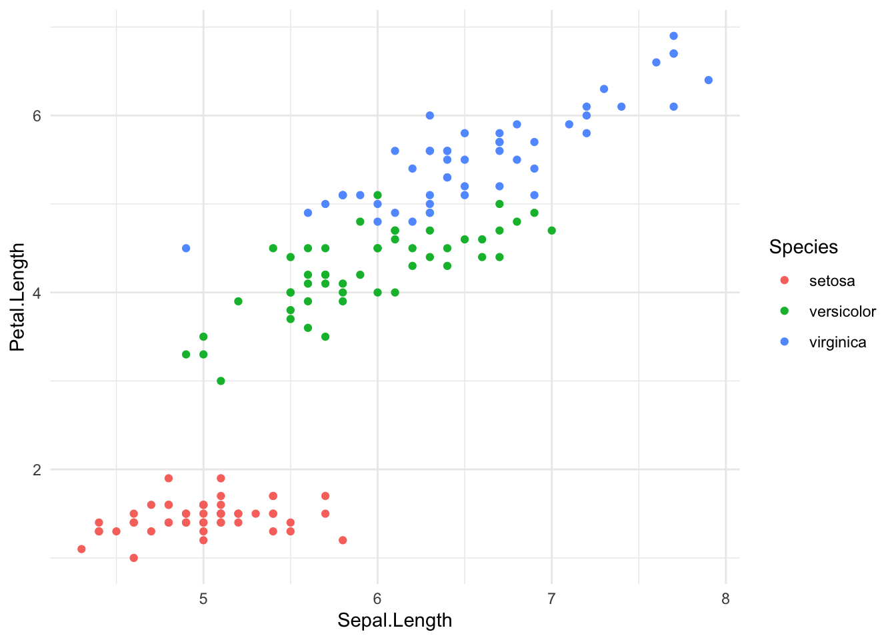

x <- c(1,2,3)
x[1] 1 2 3Data needs to be contained within objects so that we can examine, manipulate, sort, analyze, and communicate about it. In this topic, we examine some of the more basic
Vectors are the most basic data container in R. They must contain data of the exact same type and are constructed using the combine() function, which is abbreviated as c() because good programmers are lazy programmers. 1
Here is an example with some numbers.
x <- c(1,2,3)
x[1] 1 2 3Vectors can contain any of the base data types.
y <- c(TRUE, TRUE, FALSE, FALSE)
y[1] TRUE TRUE FALSE FALSEz <- c("Bob","Alice","Thomas")
z[1] "Bob" "Alice" "Thomas"Each vector has an inherent length representing the number of elements it contains.
length(x)[1] 3When asked, a vector reports the class of itself as the type of data contained within it.
class(x)[1] "numeric"class(y)[1] "logical"class(z)[1] "character"however, a vector is also a data type. As such, it has the is.vector() function. So this x can be both a vector and a numeric.
is.vector( x ) && is.numeric( x )[1] TRUEThere are a lot of times when we require a sequence of values and it would get a bit tedious to type them all out manually. R has several options for creating vectors that are comprised of a sequence of values.
The easiest type is the colon operator, that will generate a sequence of numerical values from the number on the left to the number on the right.
1:10 -> y
y [1] 1 2 3 4 5 6 7 8 9 10It also works in the other direction (descending).
10:1 [1] 10 9 8 7 6 5 4 3 2 1However, it is only available to make a sequence where the increment from one value to the next is 1.
3.2:5.7[1] 3.2 4.2 5.2For more fine-grained control, we can use the function seq() to iterate across a range of values and specify either the step size (here from 1-10 by 3’s)
seq(1,10,by=3)[1] 1 4 7 10OR the length of the response and it will figure out the step size to give you the right number of elements.
seq( 119, 121, length.out = 6)[1] 119.0 119.4 119.8 120.2 120.6 121.0To access and change values within a vector, we use square brackets and the number of the entry of interest. It should be noted that in R, the first element of a vector is # 1.
So, to get to the third element of the x vector, we would:
x[3][1] 3If you ask for values in the vector off the end (e.g., the index is beyond the length of the vector) it will return missing data.
x[5][1] NAIn addition to getting the values from a vector, assignment of individual values proceeds similarly.
x[2] <- 42
x[1] 1 42 3If you assign a value to a vector that is way off the end, it will fill in the intermediate values with NA for you.
x[7] <- 43
x[1] 1 42 3 NA NA NA 43Just like individual values for each data type, vectors of these data types can also be operated using the same operators. Consider the two vectors x (a sequence) and y (a random selection from a Poisson distribution), both with 5 elements.
x <- 1:5
y <- rpois(5,2)
x[1] 1 2 3 4 5y[1] 2 0 2 3 3Mathematics operations are done element-wise. Here is an example using addition.
x + y [1] 3 2 5 7 8as well as exponents.
x^y[1] 1 1 9 64 125If the lengths of the vectors are not the same R will implement a recycling rule where the shorter of the vectors is repeated until you fill up the size of the longer vector. Here is an example with the 5-element x and the a new 10-element z. Notice how the values in x are repeated in the addition operation.
z <- 1:10
x + z [1] 2 4 6 8 10 7 9 11 13 15If the two vectors are not multiples of each other in length, it will still recycle the shorter one but will also give you a warning that the two vectors are not conformant (just a FYI).
x + 1:8Warning in x + 1:8: longer object length is not a multiple of shorter object
length[1] 2 4 6 8 10 7 9 11The operations used are dependent upon the base data type. For example, the following character values can be passed along to the paste() function to put each of the elements in the first vector with the corresponding values in the second vector (and specifying the separator).
a <- c("Bob","Alice","Thomas")
b <- c("Biologist","Chemist","Mathematician")
paste( a, b, sep=" is a ")[1] "Bob is a Biologist" "Alice is a Chemist"
[3] "Thomas is a Mathematician"So, in addition to being able to work on individual values, all functions are also vector functions.
A matrix is a 2-dimensional container for the same kind of data as well. The two dimensions are represented as rows and columns in a rectangular configuration. Here I will make a 3x3 vector consisting of a sequence of numbers from 1 to 9.
X <- matrix( 1:9, nrow=3, ncol=3 )
X [,1] [,2] [,3]
[1,] 1 4 7
[2,] 2 5 8
[3,] 3 6 9It is a bit redundant to have both nrow and ncol with nrow * ncol = length(sequence), you can just specify one of them and it will work out the other dimension.
Just like a vector, matrices use square brackets and the row & column number (in that order) to access individual elements. Also, just like vectors, both rows and columns start at 1 (not zero). So to replace the value in the second row and second column with the number 42, we do this.
X[2,2] <- 42
X [,1] [,2] [,3]
[1,] 1 4 7
[2,] 2 42 8
[3,] 3 6 9Matrices are actually structures fundamental to things like linear algebra. As such, there are many operations that can be applied to matrices, both unary and binary.
A transpose is a translation of a matrix that switches the rows and columns. In R it is done by the function t(). Here I use this to define another matrix.
Y <- t(X)
Y [,1] [,2] [,3]
[1,] 1 2 3
[2,] 4 42 6
[3,] 7 8 9Binary operators using the normal operators in the top row of your keyboard are generally element-wise operations. Here the addition of these two matrices requires:
1. Both matrices have the same number of rows.
2. Both matrices have the same number of columns.
3. Both matrices have the same internal data types.
Here is an example of addition (notice how the resulting [1,1] object is equal to X[1,1] + Y[1,1])
X + Y [,1] [,2] [,3]
[1,] 2 6 10
[2,] 6 84 14
[3,] 10 14 18The same for element-wise multiplication.
X * Y [,1] [,2] [,3]
[1,] 1 8 21
[2,] 8 1764 48
[3,] 21 48 81However, there is another kind of matrix multiplication that sums the product of rows and columns. Since this is also a variety of multiplication but is carried out differently, we need to use a different operator. Here the matrix multiplication operator is denoted as the combination of characters %*%.
X %*% Y [,1] [,2] [,3]
[1,] 66 226 90
[2,] 226 1832 330
[3,] 90 330 126This operation has a few different constraints:
So the resulting element in [1,3] position is found by \(1*3 + 4*6 + 7*9 = 90\).
Lists are a more flexible container type. Here, lists can contain different types of data in a single list. Here is an example of a list made with a few character values, a numeric, a constant, and a logical value.
lst <- list("A","B",323423.3, pi, TRUE)When you print out a list made like this, it will indicate each element as a numeric value in double square brackets.
lst[[1]]
[1] "A"
[[2]]
[1] "B"
[[3]]
[1] 323423.3
[[4]]
[1] 3.141593
[[5]]
[1] TRUEIndexing values in a list can be done using these numbers. To get and reset the values in the second element of the list, one would:
lst[[2]] <- "C"
lst[[1]]
[1] "A"
[[2]]
[1] "C"
[[3]]
[1] 323423.3
[[4]]
[1] 3.141593
[[5]]
[1] TRUELists can be more valuable if we use names for the keys instead of just numbers. Here, I make an empty list and then assign values to it using names (as character values) in square brackets.
myInfo <- list()
myInfo["First Name"] <- "Rodney"
myInfo["Second Name"] <- "Dyer"
myInfo["Favorite Number"] <- 42When showing named lists, it prints included items as:
myInfo$`First Name`
[1] "Rodney"
$`Second Name`
[1] "Dyer"
$`Favorite Number`
[1] 42In addition to the square bracket approach, we can also use $ notation to add elements to the list (like shown above).
myInfo$Vegetarian <- FALSEBoth are equivalent.
myInfo$`First Name`
[1] "Rodney"
$`Second Name`
[1] "Dyer"
$`Favorite Number`
[1] 42
$Vegetarian
[1] FALSEIn addition to having different data types, you can also have different sized data types inside a list. Here I add a vector (a valid data type as shown above) to the list.
myInfo$Homes <- c("RVA","Oly","SEA")
myInfo$`First Name`
[1] "Rodney"
$`Second Name`
[1] "Dyer"
$`Favorite Number`
[1] 42
$Vegetarian
[1] FALSE
$Homes
[1] "RVA" "Oly" "SEA"To access these values, we can use a combination of $ notation and [] on the resulting vector.
myInfo$Homes[2][1] "Oly"When elements in a list are defined using named keys, the list itself can be asked for the keys using names().
names(myInfo)[1] "First Name" "Second Name" "Favorite Number" "Vegetarian"
[5] "Homes" This can be helpful at times when you did not create the list yourself and want to see what is inside of it.
As you see above, this list has keys such as “First Name” and “Vegetarian”. The first one has a space inside of it whereas the second one does not. This is a challenge. If we were to try to use the first key as
myInfo$First NameWould give you an error (if I ran the chunk but I cannot because it is an error and won’t let me compile this document if I do). For names that have spaces, we need to enclose them inside back-ticks (as shown in the output above).
myInfo$`First Name`[1] "Rodney"So feel free to use names that make sense, but if you do, you’ll need to treat them a bit specially using the backticks.
By far, the most common location for lists is when you do some kind of analysis. Almost all analyses return the results as a special kind of list.
Here is an example looking at some data from three species of Iris on the lengths and width of sepal and petals. The data look like:

We can look at the correlation between two variable using the built-in cor.test() function.
iris.test <- cor.test( iris$Sepal.Length, iris$Petal.Length )We can print the output and it will format the results in a proper way.
iris.test
Pearson's product-moment correlation
data: iris$Sepal.Length and iris$Petal.Length
t = 21.646, df = 148, p-value < 2.2e-16
alternative hypothesis: true correlation is not equal to 0
95 percent confidence interval:
0.8270363 0.9055080
sample estimates:
cor
0.8717538 However, the elements in the iris.test are simply a list.
names(iris.test)[1] "statistic" "parameter" "p.value" "estimate" "null.value"
[6] "alternative" "method" "data.name" "conf.int" In fact, the contents of the output are just keys and values, even though when we printed it all out, it was formatted as a much more informative output.
| Values | |
|---|---|
| statistic.t | 21.6460193457598 |
| parameter.df | 148 |
| p.value | 1.03866741944975e-47 |
| estimate.cor | 0.871753775886583 |
| null.value.correlation | 0 |
| alternative | two.sided |
| method | Pearson's product-moment correlation |
| data.name | iris$Sepal.Length and iris$Petal.Length |
| conf.int1 | 0.827036329664362 |
| conf.int2 | 0.905508048821454 |
We will come back to this special kind of printing later when discussing functions but for now, let’s just consider how cool this is because we can access the raw values of the analysis directly. We can also easily incorporate the findings of analyses, such as this simple correlation test, and insert the content into the text. All you have to do is address the components of the analysis as an in-text r citation. Here is an example where I include the values of:
iris.test$estimate cor
0.8717538 iris.test$statistic t
21.64602 iris.test$p.value[1] 1.038667e-47Here is an example paragraph (see the raw quarto document to see the formatting).
There was a significant relationship between sepal and petal length (Pearson Correlation, \(\rho =\) 0.872, \(t =\) 21.6, P = 1.04e-47).
The data.frame is the most common container for all the data you’ll be working with in R. It is kind of like a spreadsheet in that each column of data is the same kind of data measured on all objects (e.g., weight, survival, population, etc.) and each row represents one observation that has a bunch of different kinds of measurements associated with it.
Here is an example with three different data types (the z is a random sample of TRUE/FALSE equal in length to the other elements).
x <- 1:10
y <- LETTERS[11:20]
z <- sample( c(TRUE,FALSE), size=10, replace=TRUE )I can put them into a data.frame object as:
df <- data.frame( TheNums = x,
TheLetters = y,
TF = z
)
df TheNums TheLetters TF
1 1 K TRUE
2 2 L FALSE
3 3 M FALSE
4 4 N FALSE
5 5 O FALSE
6 6 P TRUE
7 7 Q TRUE
8 8 R FALSE
9 9 S TRUE
10 10 T TRUESince each column is its own ‘type’ we can easily get a summary of the elements within it using summary().
summary( df ) TheNums TheLetters TF
Min. : 1.00 Length :10 Mode :logical
1st Qu.: 3.25 N.unique :10 FALSE:5
Median : 5.50 N.blank : 0 TRUE :5
Mean : 5.50 Min.nchar: 1
3rd Qu.: 7.75 Max.nchar: 1
Max. :10.00 And depending upon the data type, the output may give numerical, counts, or just description of the contents.
Just like a list, a data.frame can be defined as having named columns. The distinction here is that each column should have the same number of elements in it, whereas a list may have different lengths to the elements.
names( df )[1] "TheNums" "TheLetters" "TF" And like the list, we can easily use the $ operator to access the vectors components.
df$TheLetters [1] "K" "L" "M" "N" "O" "P" "Q" "R" "S" "T"class( df$TheLetters )[1] "character"Indexing and grabbing elements can be done by either the column name (with $) and a square bracket OR by the [row,col] indexing like the matrix above.
df$TheLetters[3][1] "M"df[3,2][1] "M"Just like a matrix, the dimensions of the data.frame is defined by the number of rows and columns.
dim( df )[1] 10 3nrow( df )[1] 10ncol( df )[1] 3By far, you will most often NOT be making data by hand but instead will be loading it from external locations. Here is an example of how we can load in a CSV file that is located in the GitHub repository for this topic. As this is a public repository, we can get a direct URL to the file. For simplicity, I’ll load in tidyverse and use some helper functions contained therein.
library( tidyverse )── Attaching core tidyverse packages ──────────────────────── tidyverse 2.0.0 ──
✔ dplyr 1.2.1 ✔ readr 2.2.0
✔ forcats 1.0.1 ✔ stringr 1.6.0
✔ lubridate 1.9.5 ✔ tibble 3.3.1
✔ purrr 1.2.2 ✔ tidyr 1.3.2
── Conflicts ────────────────────────────────────────── tidyverse_conflicts() ──
✖ dplyr::filter() masks stats::filter()
✖ dplyr::lag() masks stats::lag()
ℹ Use the conflicted package (<http://conflicted.r-lib.org/>) to force all conflicts to become errorsThe URL for this repository is
url <- "https://raw.githubusercontent.com/DyerlabTeaching/Data-Containers/main/data/arapat.csv"And we can read it in directly (as long as we have an internet connection) as:
beetles <- read_csv( url )Rows: 39 Columns: 3
── Column specification ────────────────────────────────────────────────────────
Delimiter: ","
chr (1): Stratum
dbl (2): Longitude, Latitude
ℹ Use `spec()` to retrieve the full column specification for this data.
ℹ Specify the column types or set `show_col_types = FALSE` to quiet this message.Notice how the function tells us a few things about the data.
The data itself consists of:
summary( beetles ) Stratum Longitude Latitude
Length :39 Min. :-114.3 Min. :23.08
N.unique :39 1st Qu.:-112.9 1st Qu.:24.52
N.blank : 0 Median :-111.5 Median :26.21
Min.nchar: 1 Mean :-111.7 Mean :26.14
Max.nchar: 5 3rd Qu.:-110.4 3rd Qu.:27.47
Max. :-109.1 Max. :29.33 which looks like:
beetles# A tibble: 39 × 3
Stratum Longitude Latitude
<chr> <dbl> <dbl>
1 88 -114. 29.3
2 9 -114. 29.0
3 84 -114. 29.0
4 175 -113. 28.7
5 177 -114. 28.7
6 173 -113. 28.4
7 171 -113. 28.2
8 89 -113. 28.0
9 159 -113. 27.5
10 SFr -113. 27.4
# ℹ 29 more rowsWe can quickly use these data and make an interactive labeled map of it in a few lines of code (click on a marker).
library( leaflet )
beetles %>%
leaflet() %>%
addProviderTiles(provider = providers$Esri.WorldTopo) %>%
addMarkers( ~Longitude, ~Latitude,popup = ~Stratum )The more lines of code that you write, the more likely there will be either a grammatical error (easier to find) or a logical one (harder to find).↩︎